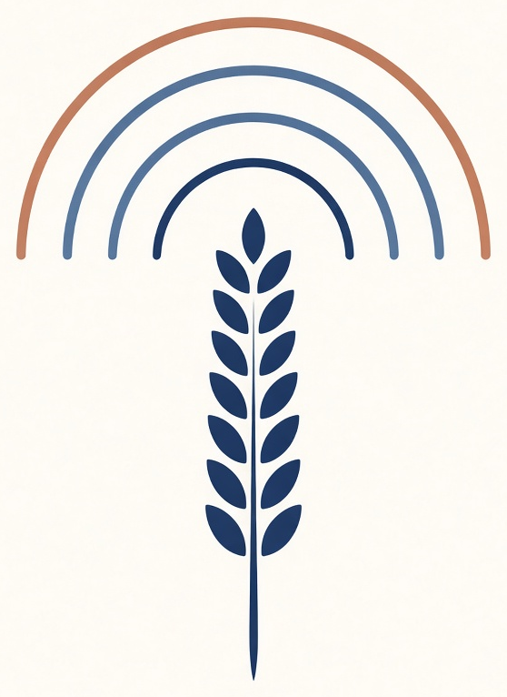

Controle multirregional
Brasil, Internacional e LATAM ficam separados, para comparar cada mercado.

CeleiroFinanceiro
Um brinde exclusivo para assinantes do Radar Global
Versículo do dia
Uma planilha para acompanhar o investimento em tráfego pago e o faturamento, cruzando Brasil, Internacional e LATAM. Google Ads, Meta, TikTok e YouTube entram na mesma visão, com BRL, USD e EUR convertidos para euro.
Brasil, Internacional e LATAM ficam separados, para comparar cada mercado.
BRL, USD e EUR entram na moeda de origem e também consolidados em euro.
KPIs, gráficos e tabelas prontos para ler o resultado sem montar fórmula.
Basta digitar os lançamentos. As fórmulas recalculam os totais.
Clique no botão abaixo para baixar o arquivo da planilha.